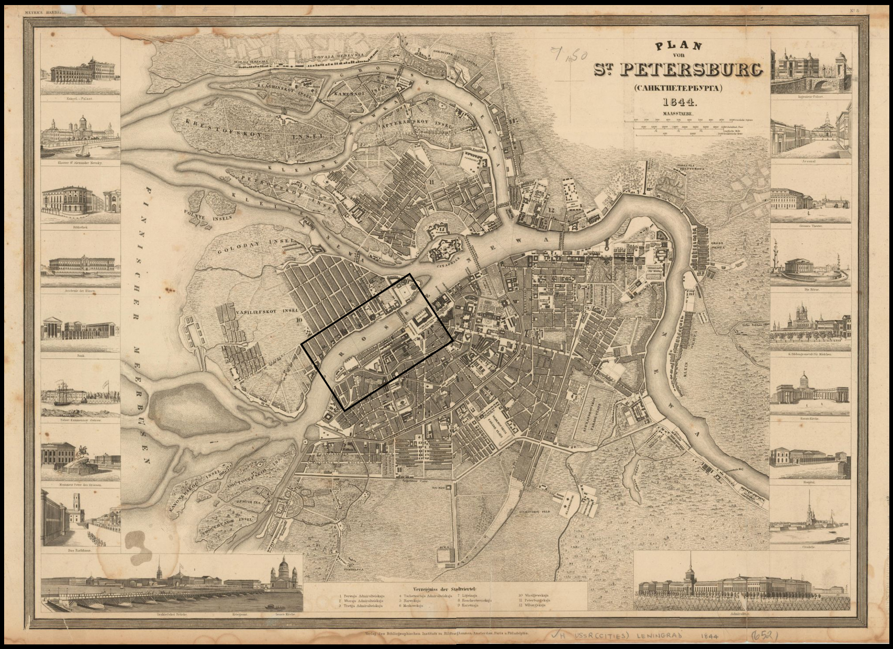
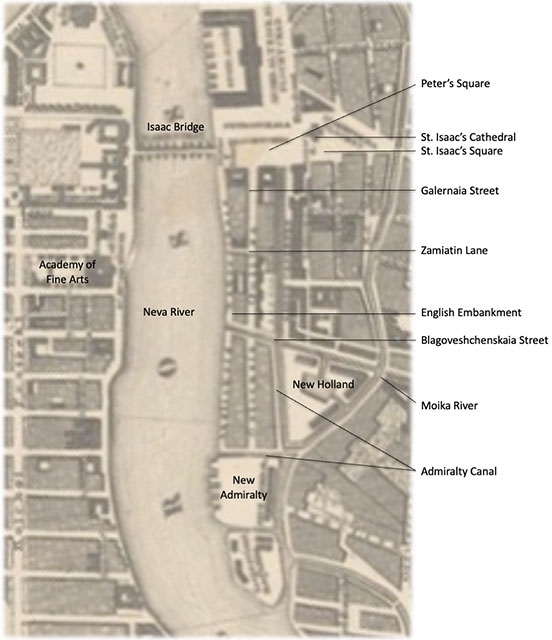
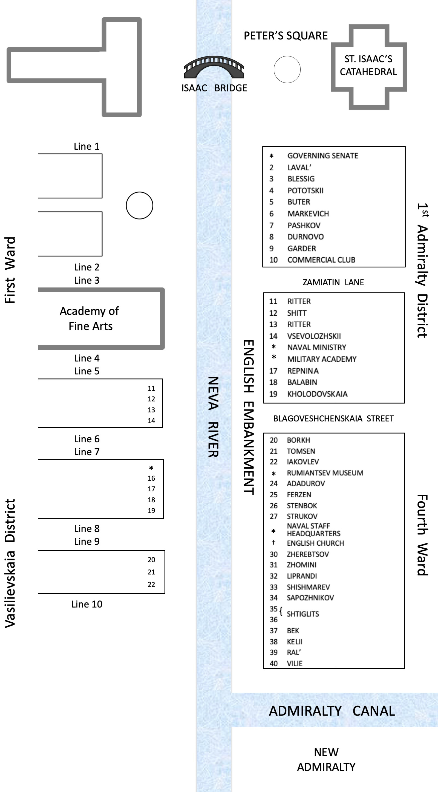
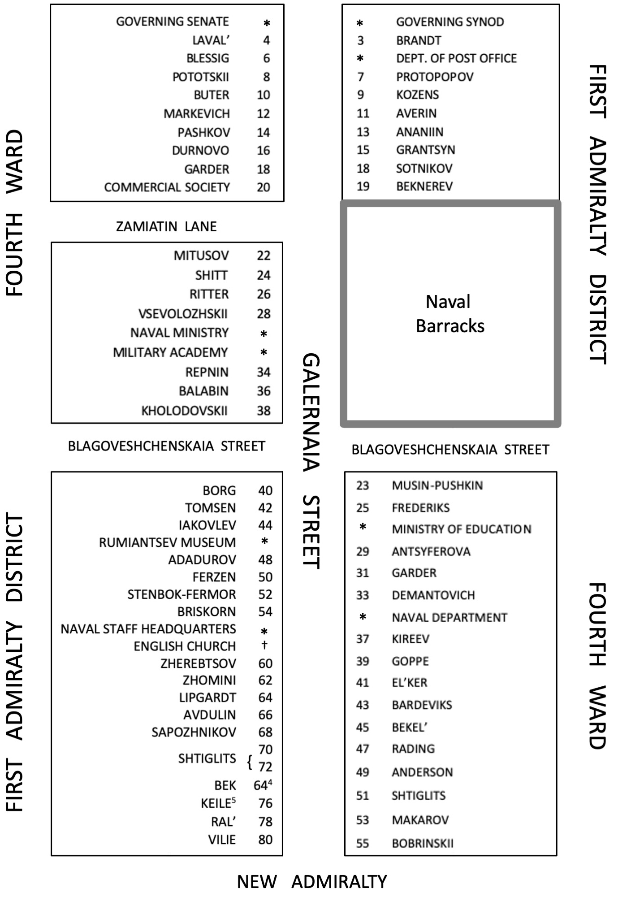
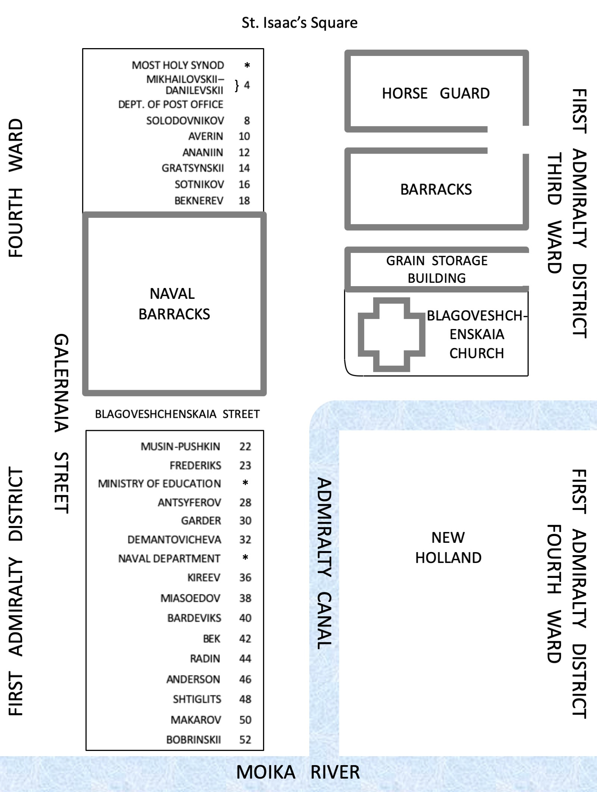
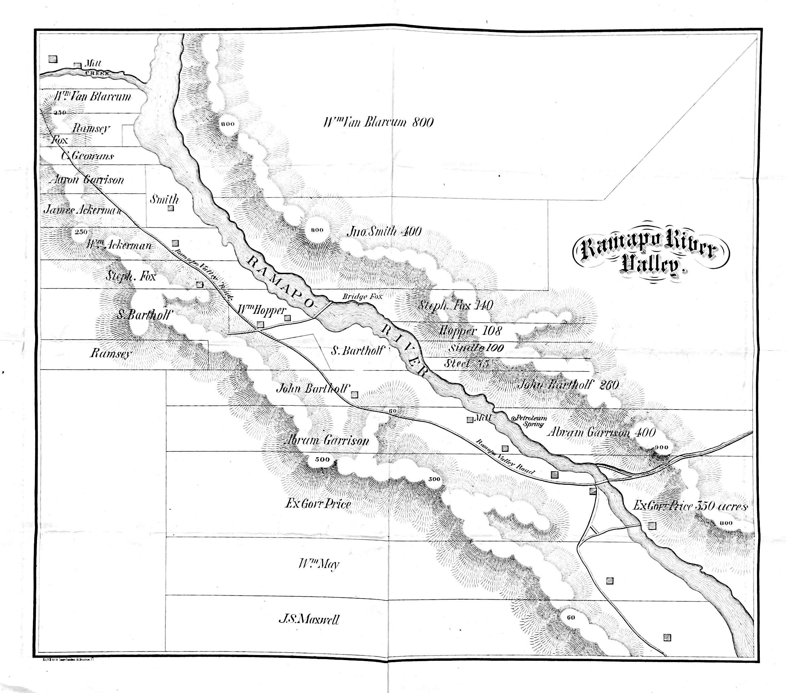

Maps
The first map shows St. Petersburg in 1844. Following that are three maps showing the house numbers and owners’ names in the environs of the English Embankment and Galernaia Street, exactly as provided in Nistrem’s Adres-Kalendar’ Sanktpeterburgskikh zhitelei.1
The English Embankment was located on the left bank of the Neva River, between Isaac Bridge and Galley Wharf. Behind the English Embankment and parallel to it was Galernaia Street, on a corner of which stood the Bobrinskii mansion (see Images 88–94). The Whistler family lived in this mansion from late September 1843 until May 1844. On the English Embankment opposite the Imperial Academy of Fine Arts stood Ritter’s house. The Whistlers lived in an apartment in this house from September 1844 until May 1849.
The surnames of house owners as supplied by Nistrem appear in the genitive case, because in Russian house + of + surname is understood. I have put these surnames into the Russian nominative case in English transliterations. If the same surname appears for the house on both the English Embankment and Galernia Street, it means that the property occupies the entire lot. If a different surname appears for the house on the English Embankment and Galernia Street, it means that each property occupies a portion of the lot. In some instances – for example, Borg and Borkh – I do not know whether these are two different surnames or a misspelling; in Russian the “kh” is a single letter of the alphabet (“Ʃ”) but does not resemble “g” (“г”) in its shape. In instances where the house owner has a foreign surname ending in a consonant – for example, Ritter – only the masculine surname is declined in Russian; the female version of the same surname is not declined. Thus, “Rittera” on the Russian language map indicates that the owner is a man, while “Ritter” indicates that the owner is a woman. This distinction is unwieldy to represent on an English language map, and is unnecessary for my purposes, and so is omitted. I am chiefly interested in the Bobrinskii and Ritter houses. As well, the house numbers provided by Nistrem do not always correspond to the addresses for individuals given in other sources, such as mandatory departure announcements published in the Sanktpeterburgskie vedomosti (St. Petersburg News) so that travelers’ debtors would be apprized. See “St. Petersburg and the Journey There” for more details about the Whistlers’ and their neighbors’ residences.
St. Petersburg, 2

The English Embankment and Surrounds, St. Petersburg, 18443
This map situates the following street and house maps within the larger context of the area around Galernaia Street and the English Embankment. The area shown here is marked by a black rectangle on the preceding 1844 map of St. Petersburg.

The English Embankment

Galernaia Street
From Peter’s Square, which is by the Building of the Governing Senate, to the New Admiralty4 5

Admiralty Canal
From the Building of the Most Holy Synod to the Moika River

United States of America, 1846
A map of the United States as it appeared in 18466 is included here, because the controversy between the United States and British governments over the Oregon Territory and the war between the United States and Mexico arising from the desire of the former to annex Texas were important political issues in 1846–1848. Anna Whistler personally did not wish to have to choose between allegiance to the United States or to England, because she loved both countries. In the case of Mexico, she was distressed that both her husband’s brother and nephew would be called up for active duty. See the entries in Part II of the Diaries for Thursday l0 April [1845] and accompanying Note 69, Friday evening [January] 9 [1846] and accompanying Note 263, July 7 [1846] and accompanying Note 410, and [Saturday] November 14 [1846] and accompanying Notes 565 and 567.

Zephaniah Kingsley's Lands in Florida7
The Ramapo Valley
The Maxwells had a home, Roslyn, in the Ramapo River Valley, where they spent spring and summers. The Maxwell family estate is located in the lowest strip of the map,8 labeled as “JS Maxwell.”

Isle of Wight and Portsmouth
Anna Whistler, James, Willie, and Mary Brennan spent July through September 1848 on the Isle of Wight.9

Notes
1 Nistrem, K, comp., Adres-Kalendar’ Sanktpeterburgskikh zhitelei [Address Directory of St. Petersburg Residents], 2 vols. (St. Petersburg: V tipografii III Otd. Sobstv. E.I. V. Kantseliarii, 1844).
2 Plan von St. Petersburg (Sanktpeterburga), 1844 [map]. This image is in the public domain. Original held in Special Collections – Historic Maps Collection, Princeton University Library (HMC01.588).
3 Nistrem, Adres-Kalendar’, vol. 1, pt. 2, Ukazatel’ goroda Sanktpeterburga [Index of the City of St. Petersburg], pp. 3, 4, 39, 40, 41. For a helpful description of the English Embankment, see Anthony Cross, “The English Embankment,” in St. Petersburg, 1703–1825, edited by A.G. Cross (Basingstoke, UK and New York: Palgrave MacMillan, 2003): pp. 50–70.
4 In this map, the house number for Bek should read 74, not 64.
5 Kelii and Keile are the same family name (Cayley in English). Nistrem’s two spellings represent the same family, occupying the entire lot.
6 Haven, John. Map of the United States, including Oregon, Texas and the Californias, showing the Boundary claimed by the United States, Boundary offered as Compromise, Boundary Proposed by Great Britain. New York: Haven and Emmerson, 1846. PJ Mode Collection of Persuasive Cartography, Division of Rare and Manuscript Collections, Cornell University Library, Ithaca, NY, accessed 30 May 2021.
7 Daniel L. Schafer, Zephaniah Kingsley Jr. and the Atlantic World: Slave Trader, Plantation Owner, Emancipator (Gainesville, FL: University of Florida Press, 2013), p. 157.
8 Reproduced with permission from the Patricia D. Klingenstein Library of The New-York Historical Society (Ramapo River Valley [map], N-YHS: Maxwell Papers, “Miscellaneous” folder).
9 Thomas Colby (1784–1852) and W. Mudge. Ordnance Survey of Isle of Wight and Part of Hampshire. 1853. David Rumsey Map Collection, Stanford University Libraries, Palo Alto, CA (6916.014).